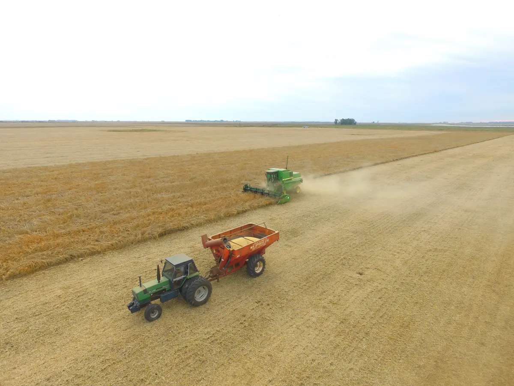

Mercado agro · Argentina
Equipos, insumos y servicios para seguir produciendo.
Publicaciones con precio o modalidad, ubicación, responsable y próximo paso.
30
Operaciones disponibles ahora

Cosecha y descarga de grano